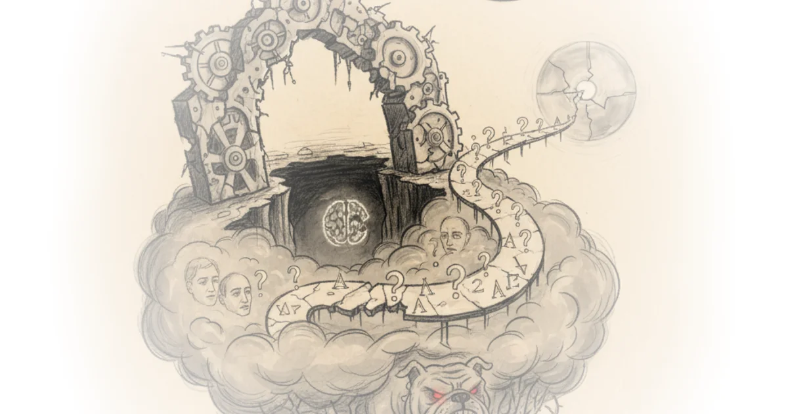

The seamstress who solved the ancient mystery of the argonaut, pioneered the aquarium, and laid the… Maria Popova · The Marginalian ·Feb 23, 2026 · 10 min read · Philosophy
Ozempic and health: Late capitalism a survival guide Wes Cecil · Wes Cecil ·Feb 23, 2026 · 49 min read · Philosophy
Anthropic tested 16 models. Instructions didn't stop them Nate B Jones · Nate B Jones ·Feb 22, 2026 · 29 min read · Philosophy
Emily dickinson's electric love letters to susan gilbert Maria Popova · The Marginalian ·Feb 22, 2026 · 16 min read · Philosophy
Seneca on grief and the key to resilience in the face of loss: An extraordinary letter to his mother Maria Popova · The Marginalian ·Feb 21, 2026 · 13 min read · Philosophy
How do you know that you love somebody? Philosopher martha nussbaum's incompleteness theorem… Maria Popova · The Marginalian ·Feb 20, 2026 · 12 min read · Philosophy
The masks of the master: Reading nietzsche's beyond good and evil Wes Cecil · Wes Cecil ·Feb 20, 2026 · 28 min read · Philosophy
The job market doesn’t care if you don't believe in AI Alberto Romero · The Algorithmic Bridge ·Feb 19, 2026 · 12 min read · Philosophy
Effective altruism has very good epistemics Bentham's Bulldog · ·Feb 19, 2026 · 10 min read · Philosophy
Crime as proxy for disorder Scott Alexander · Astral Codex Ten ·Feb 19, 2026 · 12 min read · Philosophy
121: 9 things your doctor didn’t tell you about gestational diabetes Various · Two Truths ·Feb 18, 2026 · 11 min read · Philosophy
Record low crime rates are real, not just reporting bias or improved medical care Scott Alexander · Astral Codex Ten ·Feb 18, 2026 · 11 min read · Philosophy
Love after life: Nobel-winning physicist richard feynman's extraordinary letter to his… Maria Popova · The Marginalian ·Feb 18, 2026 · 14 min read · Philosophy
Elon Musk vs elon Musk: Late capitalism a survival guide addendum Wes Cecil · Wes Cecil ·Feb 18, 2026 · 12 min read · Philosophy
American principles in the age of MAGA nihilism Sarah Longwell, Tim Miller, Bill Kristol · The Bulwark ·Feb 17, 2026 · 11 min read · Philosophy
Monopoly round-up: Stop telling me AI is sentient when you're just robbing me Matt Stoller · ·Feb 16, 2026 · 15 min read · Philosophy
Hinduism, consciousness and advaita vedanta - swami sarvapriyananda Alex O'Connor · Cosmic Skeptic ·Feb 16, 2026 · 100 min read · Philosophy
Episode #244 ... after virtue - alasdair MacIntyre Stephen West · ·Feb 16, 2026 · 37 min read · Philosophy
Politics vastly increases AI moral hazards Jimmy Alfonso Licon · ·Feb 16, 2026 · 22 min read · Philosophy
What kind of apes are we? David Pinsof · Conspicuous Cognition ·Feb 16, 2026 · 17 min read · Philosophy
The unaskable question: Late capitalism a survival guide Wes Cecil · Wes Cecil ·Feb 16, 2026 · 54 min read · Philosophy
Kafka's approach to creative block and the four psychological hindrances that keep the gifted… Maria Popova · The Marginalian ·Feb 15, 2026 · 15 min read · Philosophy
Reasons and moral anti-realism Bentham's Bulldog · ·Feb 14, 2026 · 13 min read · Philosophy 
Love, sex, and the meaning of life Michael Huemer · Fake Nous ·Feb 14, 2026 · 11 min read · Philosophy
Hannah arendt on love and how to live with the fundamental fear of loss Maria Popova · The Marginalian ·Feb 14, 2026 · 14 min read · Philosophy
The monarchs, music, and the meaning of life: The most touching deathbed love letter ever written Maria Popova · The Marginalian ·Feb 13, 2026 · 15 min read · Philosophy